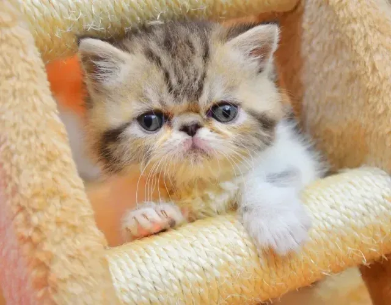
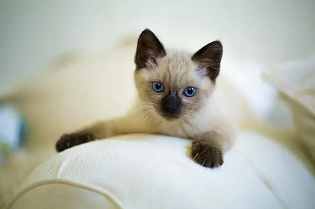
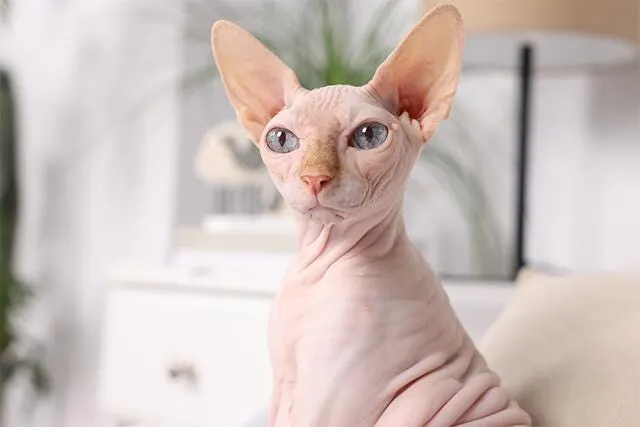
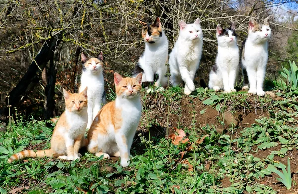

Um mundo de cores, formas e personalidades!
Você sabia que nem todos os gatos são iguais? Existem felinos com características muito diferentes,
desde os mais peludos até os que praticamente não possuem pelos.
Alguns são pequenos, outros impressionam pelo tamanho, e cada um possui suas próprias particularidades.

Conhecido pelo focinho achatado,
olhos expressivos e pelagem longa
e volumosa. Geralmente tem um
temperamento tranquilo.

Siamês
Reconhecido pelos olhos azuis,
corpo claro e extremidades mais escuras.
Costuma ser comunicativo e sociável.

Maine Coon
Um dos maiores gatos domésticos,
possui pelos longos, orelhas
características e aparência imponente.

Sphynx
Chamado popularmente de gato sem pelo,
possui pele enrugada, orelhas grandes
e aparência bastante diferente.

British Shorthair
Possui corpo robusto, rosto arredondado
e pelagem curta e densa, sendo muito
conhecido por sua aparência de ursinho.
Existem raças com características tão diferentes que parecem até de outro mundo!
Alguns possuem orelhas curvadas,outros têm pernas
curtas ou aparências bastante exóticas.
E é justamente sobre esses felinos que vamos falar a seguir!

Gatos raros e surpreendentes
Descubra raças pouco comuns, suas características especiais e o que as torna tão diferentes dos gatos que conhecemos.